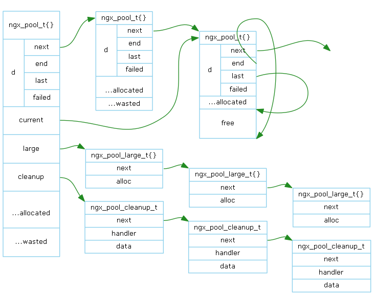

1 - 概述
2 - 内存池

上图表示一个由 ngx_pool_create() 所创建的内存池。
ngx_pool_t
表示一块固定大小的内存块，在头部包含一些管理字段。
- ngx_pool_data_t
- next
指向下一个ngx_pool_t。组成内存块链表。
- end
指向本块内存的结尾。
- last
指向本块内存的可分配位置。
- failed
从本块内存上分配失败次数。
- max
根据分配内存的大小，内存池分为二种：小于max的为小内存，大于等于max的为大内存。
- current
指向内存块链表中有内存可分配的内存块ngx_pool_t，避免从链表头开始线性查找，提高效率。
- large
大内存管理链表。
- cleanup
清理函数链表。当释放这个内存池时，会调用清理函数。
ngx_pool_large_t
管理一块通过malloc向系统申请的大内存。不过ngx_pool_large_t结构体本身则是以小内存向内存池申请的。
- next
指向下一个ngx_pool_large_t。组成大内存管理链表。
- alloc
指向通过malloc向系统申请的大内存。
ngx_pool_cleanup_t
- next
指向下一个ngx_pool_cleanup_t。组成链表。
- handler/data
清理回调函数以及参数。
2.1 - 分配小内存
- 通过current得到有内存可分配的ngx_pool_t。
- 如果有足够剩余内存，则移动last，分配完成。
- 如果不足，则依次从链表的ngx_pool_t分配，并更新分配失败次数（failed）。
- 全部没有足够剩余内存，则通过memalign(malloc)再向系统新申请一个内存块ngx_pool_t，并挂入链表。
- 如果failed大于4，则认为该npx_pool_t没有足够剩余内存可分配。更新current使它指向有足够剩余内存的ngx_pool_t。
- 分配完成。
2.2 - 释放小内存
小内存无法单独释放，也无法重用。它随内存池的释放而释放。
2.3 - 分配大内存
- 通过malloc向系统申请所需内存。
- 向内存池申请ngx_pool_large_t结构体。
- 将ngx_pool_large_t挂入大内存管理链表。
- 分配完成
2.4 - 释放大内存
从大内存管理链表中找到并删除ngx_pool_large_t，调用free向系统释放内存。ngx_pool_large_t不会被释放。
2.5 - 内存池用法
Nginx运行时会产生具有生命周期的对象。
ngx_cycle_t
生命周期是Nginx整个过程，包含配置参数等数据。ngx_cycle_t有一个专用的内存池，配置参数从此分配。 进程结束时，统一释放。
ngx_conf_t
生命周期是解析配置文件过程。由于解析配置文件过程中，需要临时保存指令名、指令参数等数据。于是 ngx_conf_t也有一个专用的内存池。解析配置文件完成后，统一释放。
ngx_connection_t
ngx_connection_t生命周期内的数据，由ngx_connection_t专用的内存池分配。连接断开后，统一释放。
ngx_http_request
每收到一个HTTP请求，则创建一个专用内存池，负责分配HTTP请求生命周期内的数据。HTTP请求处理完成，统一释放。
2.6 - 内存池分析
内存池合并了小内存的分配与释放，向系统申请和释放的内存都不是小内存，可以有效防止产生大量系统内存碎片。
内存池不立即释放小内存而是统一释放，它以牺牲小内存为代价，简化了内存管理算法，提高了效率。
3 - 共享内存
[TODO]
4 - SLAB
[TODO]